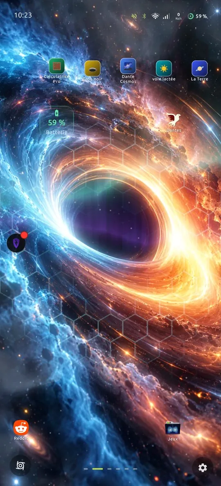
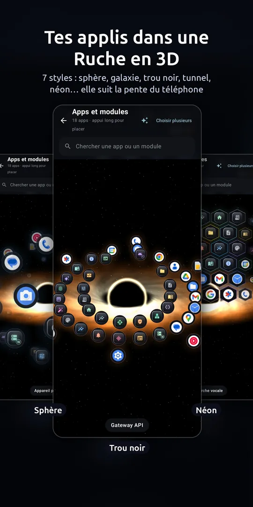
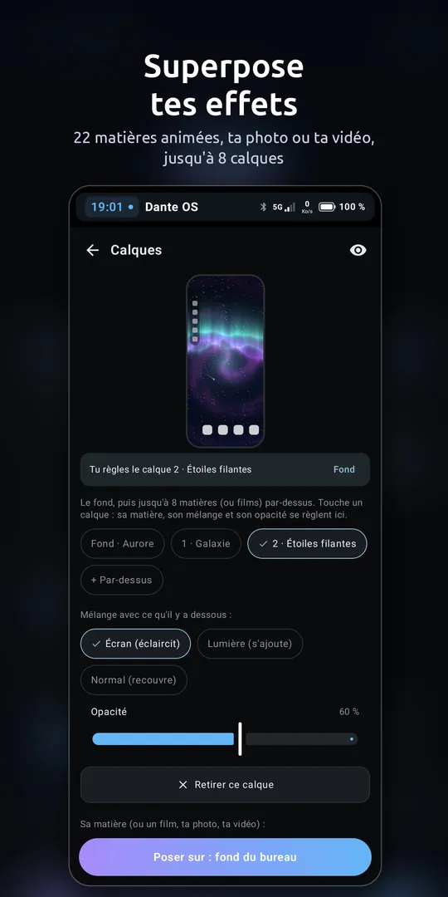
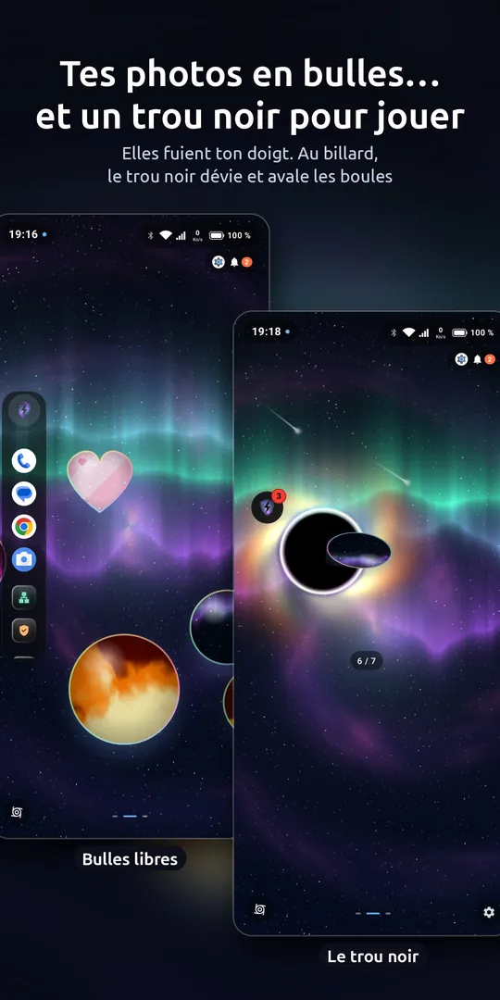
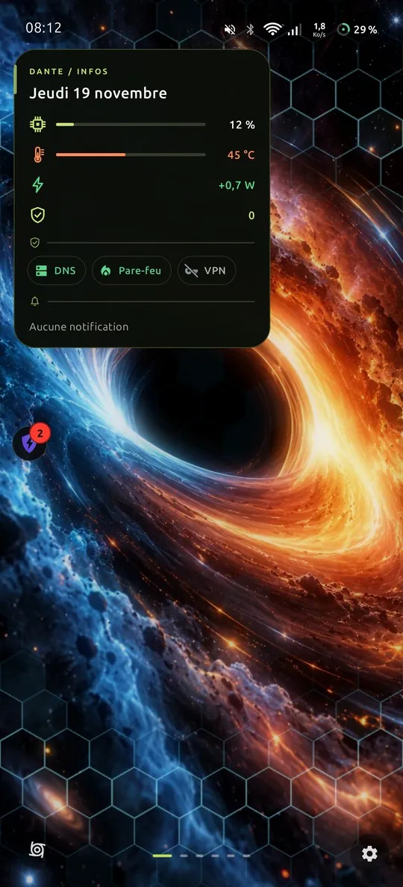
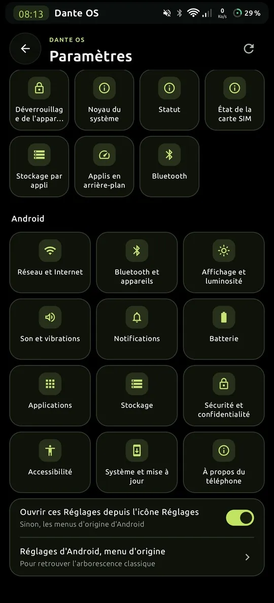
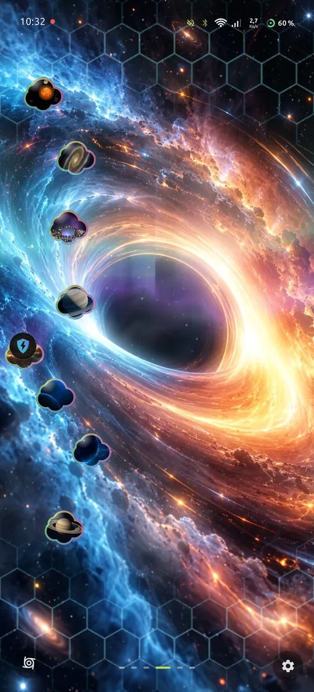
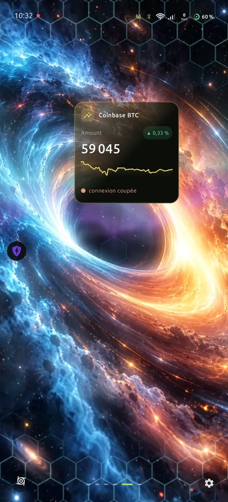

Tout est filmé ou capturé sur un vrai téléphone (un OnePlus 13), sans trucage ni retouche des écrans.
Dante / Bande-annonce
Avec le son : c'est la musique de Dante.
Le bureau et les effets
Le bureau vivantLa RucheBulles photo et billardLe dock dans son bouclierDante FX : les calquesDante FX : aurore, néon, feuMatière AuroreLes matièresDante Engine : les thèmesLa visite de l'univers

Le bureauLe bureau vivant

La Ruche en 3D

Dante FX

Les bulles photo
Le bouclier et le dock
Les 7 replis du dockLes 8 effets du bouclierLes matières du bouclierChoisir la matière du bouclierLe dock dans son bouclier
Les mini-apps
Mini-app : Dante CosmosMini-app : La TerreMini-app : Trou noirMini-app : la Voie lactée
Les 7 Ruches
Les 7 RuchesRuche · MontreRuche · NéonRuche · SphèreRuche · GalaxieRuche · TourbillonRuche · Trou noirRuche · Tunnel 3DLes styles de la Ruche
Touche l'heure : la popup InfosGlisse du haut à gauche : les notificationsGlisse à droite : Contrôles, puis ParamètresAppui long sur l'heure : le multitâche

Touche l'heure : la popup InfosGlisse du haut à gauche : les notificationsGlisse du haut à droite : les ContrôlesParamètres : en direct et optionsParamètres : modules et raccourcis

Paramètres : Android en famillesParamètres : Genesis et interface
Le bureau
Le bureauMini-apps sur le bureau

Les bulles photo

Une carte Gateway
Les modules
Pare-feuFiltre DNSSécuritéGovernorBattery RootTélémétrieAudit des appsDEX Lab